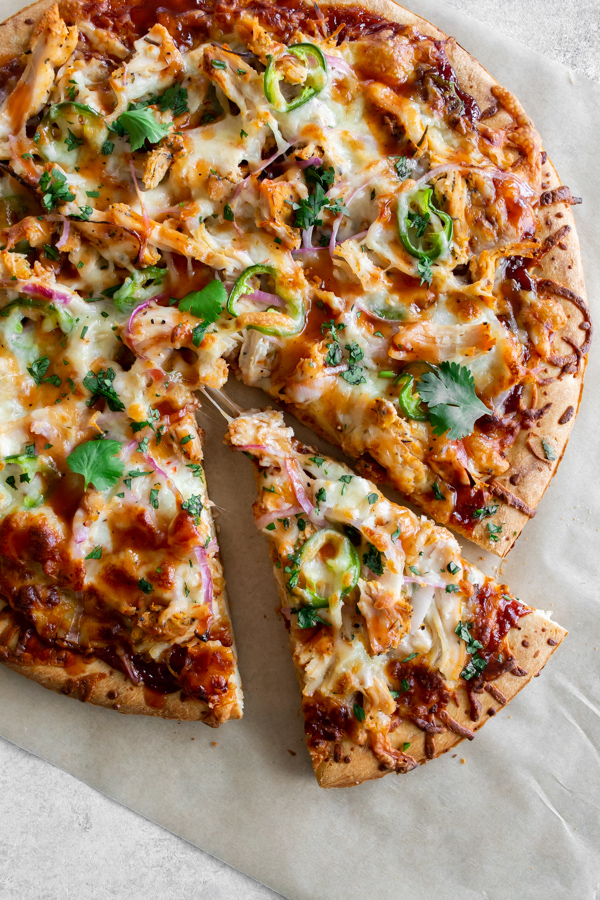

Step-by-Step Guide for Making Homemade Barbeque Pizza

Description
Barbecue pizza combines the classic flavors of a traditional pizza with the smoky tang of barbecue sauce.
Typically featuring a savory barbecue sauce base topped with shredded chicken or pork, red onions, bell peppers,
and melted mozzarella cheese, this pizza offers a delightful fusion of savory, sweet, and tangy flavors.
It's a mouthwatering twist on the traditional pizza, perfect for those craving a unique and satisfying meal.
Ingredients
- Pizza dough (homemade or store-bought)
- Barbecue sauce (your favorite brand or homemade)
- Cooked and shredded chicken, pulled pork, or beef brisket
- Red onion, thinly sliced
- Bell peppers, thinly sliced (optional)
- Mozzarella cheese, shredded
- Olive oil
- Cornmeal or flour (for dusting the pizza peel or baking sheet)
- Fresh cilantro, chopped (optional, for garnish)
- Salt and pepper (to taste)
Steps
- Preheat your oven to the highest temperature it can go,
typically around 475-500°F (245-260°C).
- Prepare your pizza dough:
- If using homemade dough, roll it out into your desired shape on a lightly floured surface.
- If using store-bought dough, follow the package instructions for any necessary preparation.
- Prepare your pizza toppings:
- Cook and shred your choice of meat (chicken, pulled pork, or beef brisket) if not already done.
- Thinly slice the red onion and bell peppers (if using).
- Shred the mozzarella cheese.
- Prepare your pizza crust:
- Lightly grease a pizza pan or baking sheet, and sprinkle it with cornmeal or flour to prevent sticking.
- Transfer the rolled-out pizza dough to the prepared pan.
- Assemble your pizza:
- Spread a generous layer of barbecue sauce over the pizza dough, leaving a small border around the edges.
- Evenly distribute the shredded meat, sliced red onion, and bell peppers (if using) over the barbecue sauce.
- Sprinkle the shredded mozzarella cheese on top of the pizza toppings.
- Bake your pizza:
- Place the assembled pizza in the preheated oven and bake for 10-15 minutes, or until the crust is golden brown and the cheese is melted and bubbly.
- Garnish and serve:
- Once baked, remove the pizza from the oven and let it cool for a few minutes.
- Sprinkle freshly chopped cilantro over the top for added flavor and freshness, if desired.
- Slice the pizza, serve hot, and enjoy your delicious homemade barbecue pizza!
Enjoy your pizza!!